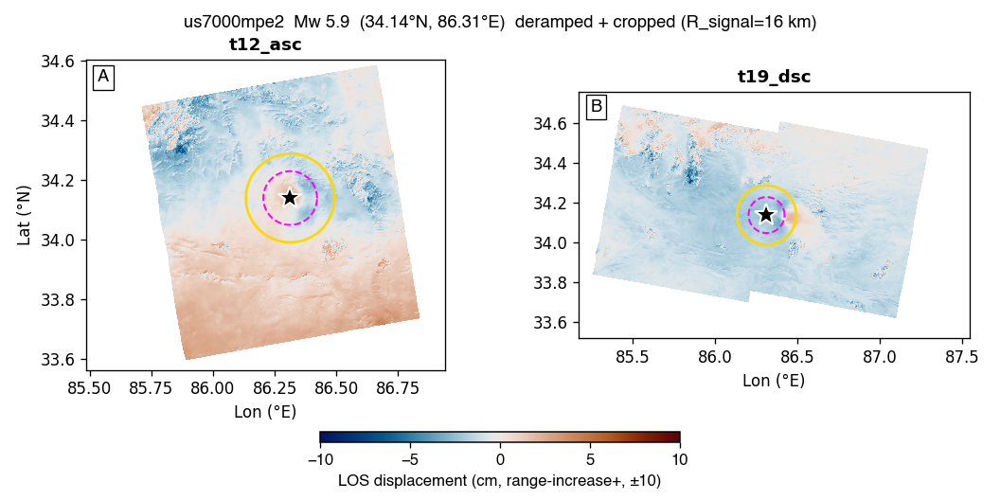

us7000mpe2 — Mw 5.9 — GBIS report
Event: western Xizang · (34.138°N, 86.313°E, depth 20.71 km)
USGS NP1: strike 232.5° / dip 71.2° / rake -10.5°
USGS NP2: strike 325.9° / dip 80.0° / rake -160.9°
Status: ESCALATED at stage 5 — slipinv_timeout. Sections below show whatever the pipeline produced before it stopped; the rest are left blank. See §3 / escalation.md.
1. Raw observations (deramped + cropped)

2. Two-round iterative downsampling (Pass-1 zoned → Pass-2 synth-quadtree)
No subsample_v9_zoned.mat found — run Stage 4 (qsRunFullEvent) first.
3. GBIS inversion result — posterior + diagnostics
| parameter | posterior median | p16 .. p84 | prior bound | USGS NP1 |
|---|
| L (km) | 0.01 | 4.66 .. 7.14 | 4.40 .. 15.39 | — |
| W (km) | 0.00 | 3.20 .. 4.90 | 3.02 .. 10.57 | — |
| Z_top (km) | 0.02 | 10.61 .. 19.01 | 0.10 .. 20.71 | — |
| dip (°) | -46.0 | 38.6 .. 61.4 | 36.2 .. 106.2 | 71.2 |
| strike (°) | 66.7 | 200.6 .. 285.4 | 172.5 .. 292.5 | 232.5 |
| X (km) | 0.01 | 2.91 .. 10.03 | -10.99 .. 10.99 | — |
| Y (km) | 0.00 | -7.37 .. 5.69 | -10.99 .. 10.99 | — |
| SS (m) | -0.013 | -0.473 .. +0.773 | -2.000 .. +2.000 | — |
| DS (m) | +0.642 | -1.099 .. -0.320 | -2.000 .. +2.000 | — |
| |slip| (m) | 0.643 | | — |
| rake (°) | -88.8 | | -10.5 |
| Mw | 5.77 ± 0.12 | | 5.9 |
USGS-convention values shown (dip>0, strike, rake). Red row = posterior median within 2% of a prior bound (railed).
诊断结论: FAIL
acceptance 0.21 (target 0.20–0.45) · ESS 136 (≥500) · Geweke |z| 3.2 (≤2)
VR per track: t12_asc 0.25 · t19_dsc 0.22 (≥0.50)
未通过项: ESS; stationarity (Geweke); VR
4. Beachball comparison
⏳ Not generated — needs the full-mode figure helper. the beachball (full-mode figure helper).
5. Triplet — data / model / residual
⏳ Not generated — needs the full-mode figure helper. the data/model/residual triplet (full-mode figure helper).
6. Joint-posterior corner plot
⏳ Not generated — needs the full-mode figure helper. the corner plot (full-mode figure helper).
7. Burn-in / chain trace
⏳ Not generated — needs the full-mode figure helper. the chain trace (full-mode figure helper).